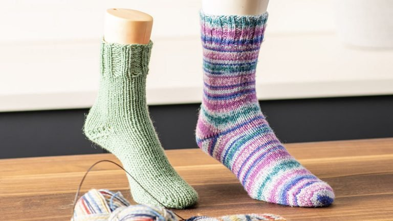

Top-Down Socks Using Magic Loop
Top-Down Socks
Knitting socks from the top down using the magic loop method is a versatile and efficient technique, ideal for creating beautifully customized socks. This method allows you to knit seamlessly in the round, making it perfect for crafting socks with intricate designs or simple patterns.
Featured Sulky Products:
- Yarn
- Circular Knitting Needles
- Stitch Markers
- Tapestry Needle
- Scissors
- Measuring Tape
- Sock Blockers (Optional)
Step-by-Step For Making Top-Down Socks Using Magic Loop:
1.Cast On: Use a stretchy cast-on method (e.g., Long-Tail Cast-On) to create the cuff.
Cast on the required number of stitches based on your pattern or sock size.
2.Divide the Stitches: Slide half the stitches onto one needle tip and the other half onto the opposite tip of the circular needle. This creates two working sections.
3.Work the Cuff: Knit the cuff using a ribbing pattern (e.g., K1, P1 or K2, P2) for 1-2 inches for elasticity.
4.Knit the Leg: Transition to stockinette stitch (knit all stitches in the round) or any desired pattern.
Continue knitting the leg to your preferred length.
5.Create the Heel Flap: Work back and forth on half the stitches to create the heel flap.
Use a slip-stitch pattern for durability.
6.Turn the Heel: Shape the heel by working short rows to create a curved section that hugs the heel.
7.Pick Up Stitches for the Gusset: Pick up stitches along the sides of the heel flap.
Resume knitting in the round and decrease gusset stitches to return to the original stitch count.
8.Knit the Foot: Continue knitting the foot in stockinette stitch or your desired pattern until the sock reaches the desired length (about 1.5–2 inches before the toe).
9.Shape the Toe: Decrease stitches evenly across the rounds to shape the toe.
10.Close the Toe: Use the Kitchener stitch or your preferred method to graft the toe seamlessly.

Share tips, start a discussion, or ask one of our experts or other students a question.